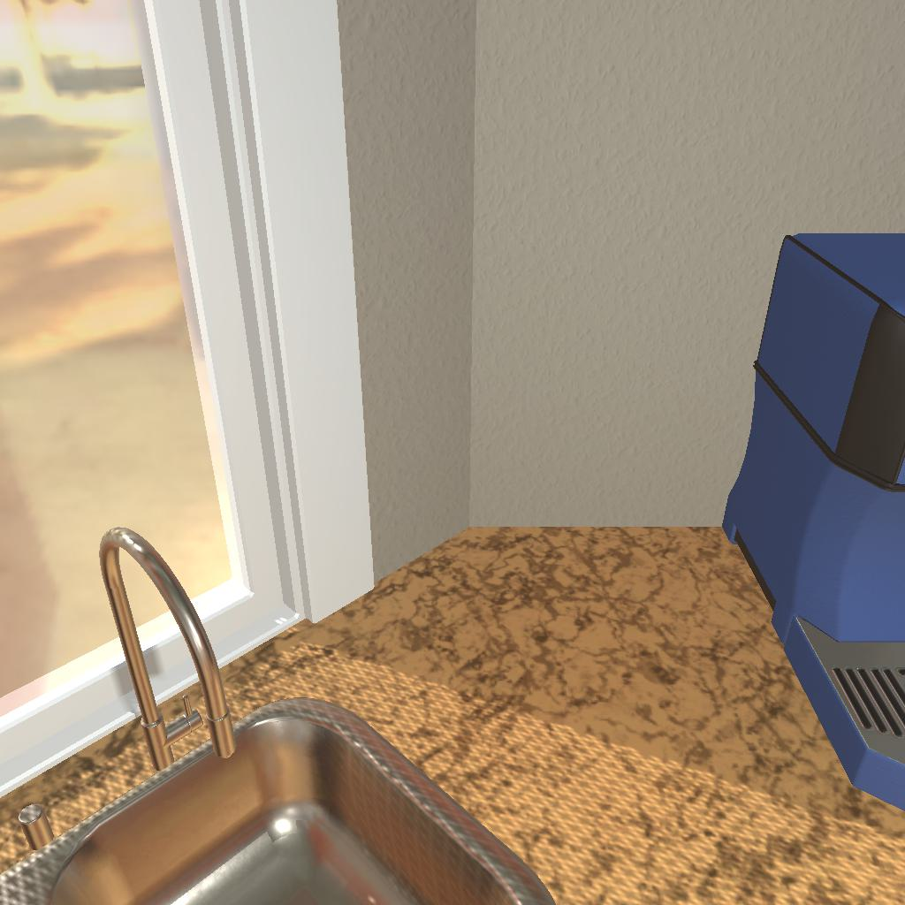

---------------------------------------------------------task: 15---------------------------------------------------------
--------------------------------------------------------------------------------------------------------------------------------------------------------------------
--------------------------------------------------------------------------------------------------------------------------------------------------------------------
Step:--------------------------------------------------------------------------0-------------------------------------------------------------------------------
----------------------------------------
VLM Prompt:
Image1:
**Instruction**
1. Analyze the provided images to identify all visible household objects and compare the difference between images (e.h. whether the object is opened or not and taken on hand or not), focusing on those relevant to the task description "put a cool mug in coffeemachine."
2. Use the analysis of images and the task hint "The agent must find an object of the desired type, pick it up, go to a fridge, cool the object with the fridge, then find the correct location to place it, and put it down there. The agent does not need to use the fridge button or open the fridge to cool the object, and the agent just needs to do action that is "cool the object with the fridge"." to answer the question: what is the most reasonable action in the choices for the task description "put a cool mug in coffeemachine"?
3. Decide and write the answer using the template: The answer is: (i): , where i is the real number. If there is no desired object in images, search every place based on **Initial Observation** to find the object. And if no one is exactly correct, choose a similar answer.
**Initial Observation**
You are in the middle of a room. Looking quickly around you, you can see cabinet (1-15), fridge (1), countertop (1-4), drawer (1-4), microwave (1), toaster (1), coffeemachine (1), garbagecan (1), sink (1), stoveburner (1-3), sinkbasin (1)
**Answer Choices**
(1): go to cabinet 1
(2): go to cabinet 2
(3): go to cabinet 3
(4): go to fridge 1
(5): go to countertop 1
(6): go to cabinet 4
(7): go to cabinet 5
(8): go to cabinet 6
(9): go to cabinet 7
(10): go to drawer 1
(11): go to drawer 2
(12): go to cabinet 8
(13): go to drawer 3
(14): go to cabinet 9
(15): go to cabinet 10
(16): go to drawer 4
(17): go to microwave 1
(18): go to cabinet 11
(19): go to toaster 1
(20): go to cabinet 12
(21): go to cabinet 13
(22): go to cabinet 14
(23): go to cabinet 15
(24): go to countertop 2
(25): go to coffeemachine 1
(26): go to garbagecan 1
(27): go to countertop 3
(28): go to countertop 4
(29): go to sink 1
(30): go to stoveburner 1
(31): go to stoveburner 2
(32): go to stoveburner 3
(33): go to sinkbasin 1
**Answer**
Let's think step by step by following the instructions.
----------------------------------------
----------------------------------------
Original Response:
The task is to put a cool mug in the coffeemachine. According to the provided task hint, the agent needs to find a mug, cool it using the fridge, and then put it in the coffeemachine.
In Image1, we can see the coffeemachine on the countertop near the sink and a window. There is no mug visible in this image.
Based on the **Initial Observation**, there are several places where a mug could be found, such as cabinets, drawers, or countertops. Since the task requires cooling the mug with the fridge, we should prioritize finding the mug first before going to the fridge.
Considering the options given, there is no direct action to pick up a mug, so we need to search for it. Cabinets and drawers are common places where mugs are stored. Therefore, the most reasonable action from the choices would be to go to a cabinet or drawer where a mug is likely to be found.
Since the image does not show any mug, we will have to search every place based on the initial observation. From the answer choices, the ones that could potentially contain a mug would be the cabinets or drawers. We do not have any indication of which specific cabinet or drawer may contain the mug, so we can choose one at random.
The answer is: (1): go to cabinet 1
----------------------------------------
----------------------------------------
>>> Refine Original VLM Response and Get Pure Action: go to cabinet 1
----------------------------------------
-----------------------------------------------------------------
Running time: 53.412949085235596 seconds
Total Money: 8.375040000000006
-----------------------------------------------------------------
-----------------------------------------------------------------
Text Observation:You arrive at loc 0. The cabinet 1 is closed.
-----------------------------------------------------------------
UNSUCCEED